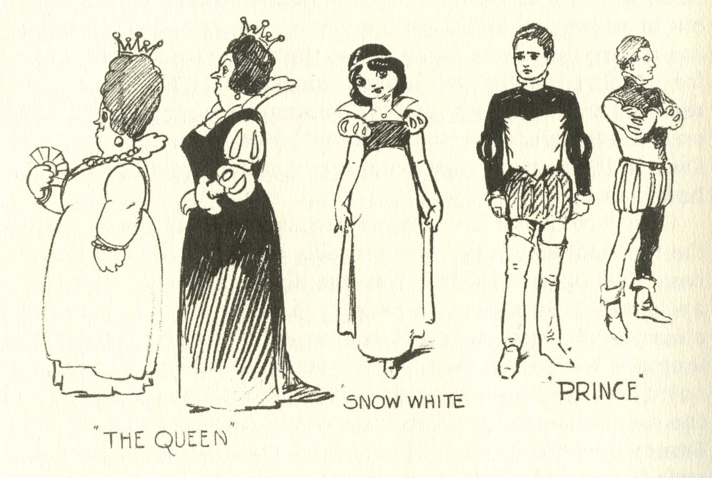
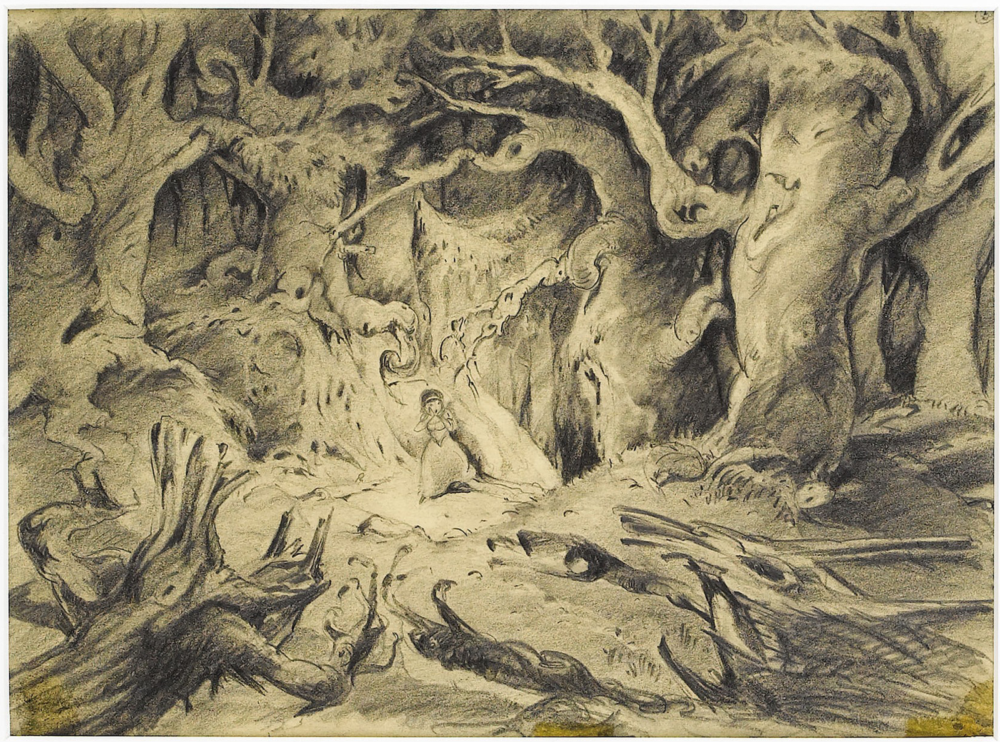

Concept art has been a career for nearly 100 years. The term was first notably used in the 1930’s by the Walt Disney Animation Studio. Some of the most pivotal and influential animations of the time exist greatly thanks to the influence of concept artists. Movies like Snow White, Pinocchio, Cinderella, Peter Pan and many other Disney films of the time can be accredited to talented concept artists, such as Albert Hurter and Ferdinand Horvath.
 Concept art for Sleeping Beauty, 1959, by Albert Hurter.The primary goal of concept art is to create a visual representation for ideas, characters, environments, or objects that do not yet exist. These visuals serve as a critical guide during the production process, ensuring that the final product aligns with the story’s narrative and themes.
This is done in a number of ways, namely:
Whether designing fantastical environments or bringing unique characters to life, concept art ensures that every visual element contributes meaningfully to the story and the overall vision.
 Concept art for Sleeping Beauty, 1959, by Ferdinand Horvath.